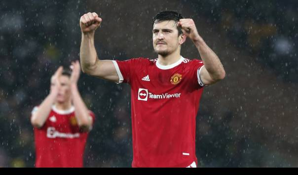

Olahraga
Erik Ten Hag Copot Jabatan Kapten Manchester United dari Harry Maguire?

JAKARTA, SasapuNews- Erik Ten Hag belum bisa memastikan apakah Harry Maguire akan kembali menjadi kapten Manchester United di musim depan.
Era Ten Hag di Manchester United sudah dimulai pada Senin (23/5/2022) kemarin.
Pada hari pertamanya di Old Trafford, pelatih asal Belanda itu pun menyapa media dengan menggelar sesi konferensi pers.
Dalam kesempatan tersebut, Ten Hag diberi berbagai pertanyaan tentang bagaimana dirinya membawa Manchester United di musim depan.
Dia juga dimintai tanggapannya tentang sejumlah pemain MU seperti Harry Maguire, Cristiano Ronaldo hingga Donny Van De Beek.
Saat ditanya tentang jabatan kapten Manchester United musim depan, Ten Hag tidak memberi jawaban gamblang apakah kehormatan tersebut masih akan diemban oleh Maguire.
Namun mantan pelatih Ajax itu menegaskan bahwa Maguire merupakan salah satu pemain penting untuknya di musim depan.
“Saya harus ulangi: musim depan adalah musim yang berbeda," jawab Ten Hag dikutip dari laman resmi Manchester United.
"Saya pikir dia melakukan pekerjaan yang hebat, dia adalah pemain hebat. Dia sudah mencapai banyak hal."
Baca Juga: 6 Partai Baru yang Bakal Bertarung di Pemilu 2024: Wajah Baru, Orang Lama
"Kontribusinya sangat bagus untuk Manchester United. Jadi saya tidak sabar untuk bekerja dengannya," ujarnya.
Sementara terkait Ronaldo, Ten Hag mengatakan bahwa mega bintang asal Portugal itu akan cocok di proyeknya musim depan.
Akan tetapi, dia juga belum mengonfirmasi apakah Ronaldo akan menjadi pemimpin pemain selanjutnya di Manchester United.
"Saya akan berbicara dulu dengan Ronaldo sebelum saya berbicara dengan Anda," ujar Ten Hag singkat.
Terakhir, mengenai Van De Beek, dia memastikan pemain yang dipinjamkan ke Everton itu akan masuk rencananya di musim depan.
Seperti yang diketahui, selama satu setengah musim di Old Trafford, Van De Beek jarang mendapat tempat di lini tengah Manchester United karena kalah bersaing dengan pemain lain.
"Tentu saja. Kami memiliki skuad yang fantastis di masa kami di Ajax," jawab Ten Hag terkait masa depan Van De Beek.
"Saya memiliki hubungan yang sangat baik dengannya dan saya tak sabar untuk bertemu lagi di lapangan," pungkasnya.